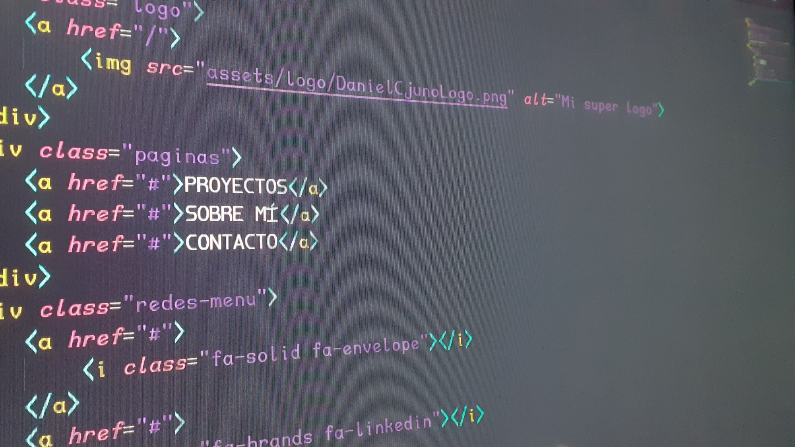

HOLA
SOY DANIEL CJUNO
Me desempeño como desarrollador en web y en automatización. Hice proyectos desarrollo web tanto con código como con herramientas no-code y low-code. Últimamente estoy entrando en el mundo de la automatización de tareas, básicamente es la integración de herramientas a un flujo de trabajo. Ambos campos me parecen muy interesantes y útiles. Le invito a que conozca más sobre mi trabajo y sobre mí.